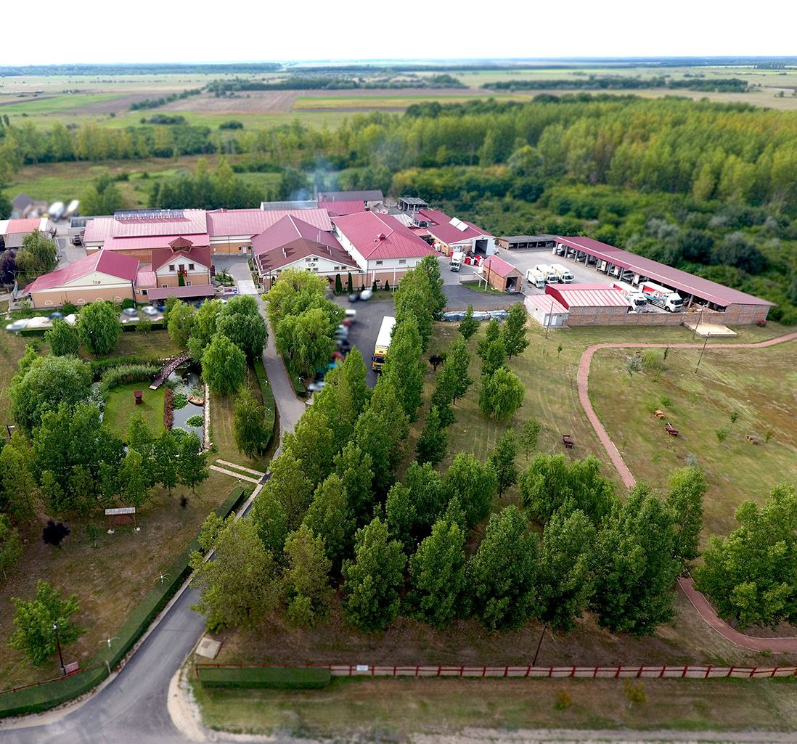
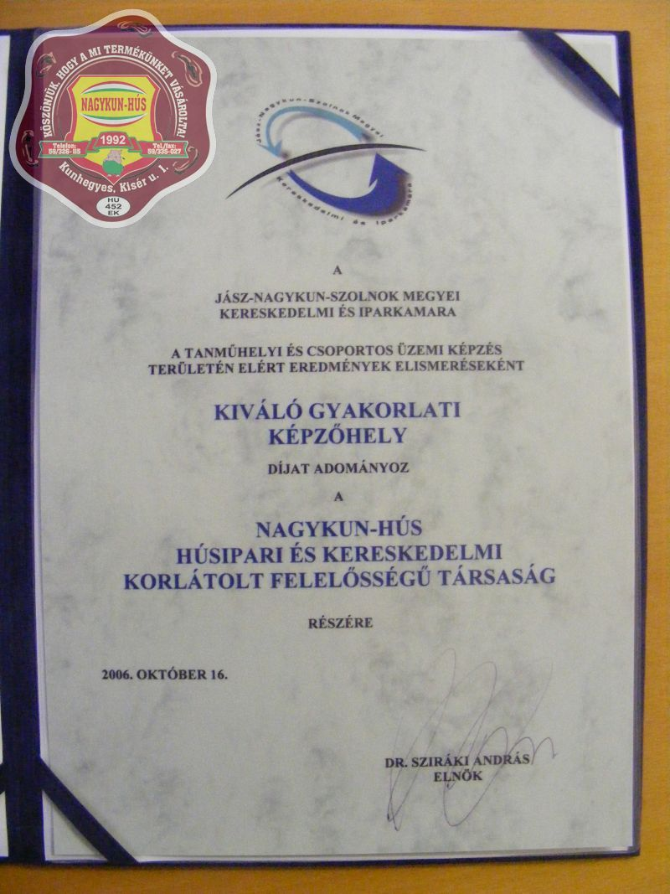
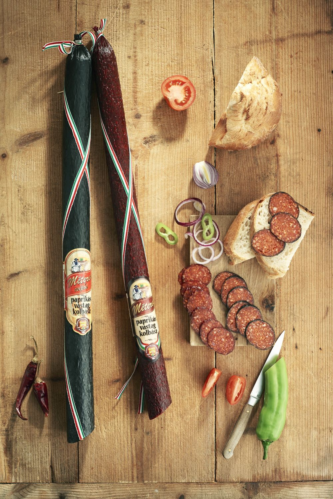
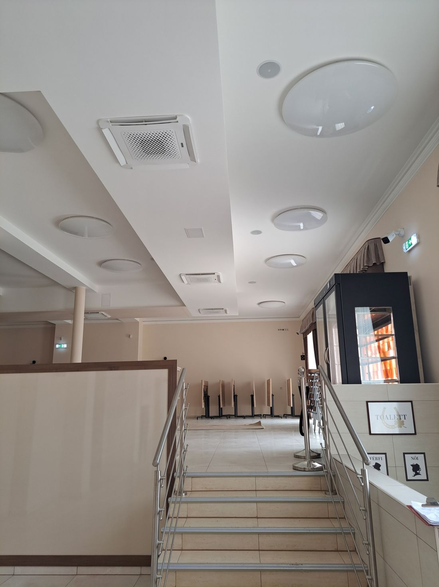
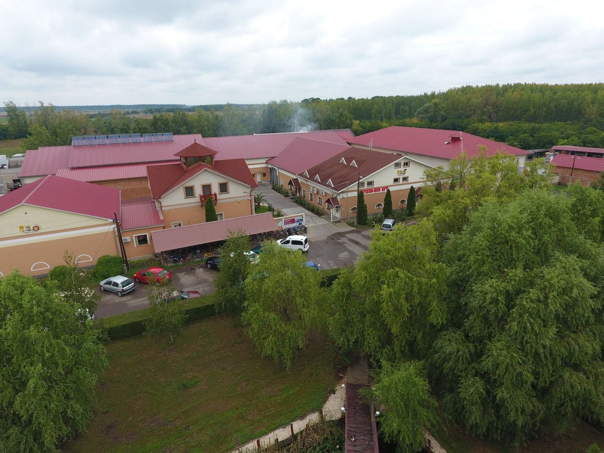

2020-1.1.2-PIACI-KFI-2020-00131
Hypoallergén hús-termékcsalád fejlesztése
Konzorciumban a Szegedi Tudományegyetemmel. Támogatás: 729 771 367 Ft (60,17%).
A cégről
Sertésvágás, bontás, darabolás és húskészítmény-gyártás a Nagykunságban, 1992 óta — folyamatos technológiai és higiéniai fejlesztéssel.
A NAGYKUN-HÚS KFT. 1992-ben alakult, tevékenysége sertésvágás, bontás, darabolás, töltelékes húskészítmény-, sózott, pácolt, termékgyártás, valamint étkezési sertészsírgyártás forgalmazása. Az elmúlt években jelentős technológiai és higiéniai fejlesztéseket hajtottunk végre, amely megteremtette a lehetőséget a termelésirányítás és termékbiztonság korszerűsítésére is. A KFT. a technológiai és technikai fejlesztéseken túl jelentősen bővítette piaci részvételét is, amely biztosította az üzem árbevételének folyamatos növekedését. Ez lehetővé tette a termékválaszték bővítését, valamint az értékesítési kör bővítését, így az árbevétel kedvezően alakult, tíz év alatt megsokszorozta forgalmát.
Jelenleg az üzemben 180 fő dolgozik, ezzel biztosított, hogy az értékesített termékek 50%-a készítmény, a másik 50%-a tőkehúsként jelenik meg. Az üzem megkapta az EU-s minősítést, számunk: HU 452 EK
A HACCP rendszert a sertésvágás, sertéscsontozás, húskészítmény-gyártás, étkezési sertészsír gyártás termelési folyamataira vezettük be. A HACCP rendszer teljes körű, minden tevékenységre vonatkozó bevezetésével az élelmiszerbiztonsági követelményeknek is meg kívánunk felelni, ezzel biztosítva a minőség javulását és a higiéniai színvonal emelését. Számos közintézmény és kereskedelmi egység beszállítói vagyunk és emellett a saját tulajdonban lévő üzleteinket is /Hús-Vár/ ellátjuk friss húsokkal és húskészítményekkel. Fontosnak tartjuk, hogy dolgozóink a munkahelyükön jól érezzék magukat, ezért a munkafeltételekre és a környezet kialakítására nagy hangsúlyt fektetünk.
2000-ben kezdtük meg a húsfeldolgozó szakmunkások önálló képzését közösen a Nagy László Szakközépiskolával. Emellett a munkaügyi Központtal is hasonló képzést szerveztünk több alkalommal. Kétszer nyertünk el képzőhely címet a JNSZ Megyei Iparkamarától.
Forgalmunk növekedésének sikerét a termékszerkezetben és a minőségben látjuk. Igyekszünk egyedi ízvilággal sajátos hazai ízeket kialakítani, melyre – az eredmények alapján – vevő a magyar lakosság, az EU-ba lépésünk óta pedig már határon kívül is megtaláltuk vevőkörét termékeinknek.

Történetünk
Az alapítástól a mai, 180 fős üzemig — a dokumentált mérföldkövek.
1992
Kunhegyesen indul a munka: sertésvágás, bontás, darabolás és töltelékes húskészítmény-gyártás.
2000
A Nagy László Szakközépiskolával közösen elindítjuk a húsfeldolgozó szakmunkások önálló képzését.
2002 · 2006
A címet és a díjat a JNSZ Megyei Kereskedelmi és Iparkamarától kaptuk.

2004
Az uniós csatlakozás óta termékeink határon kívül is megtalálták vevőkörüket.
2008
„2008. Év Vállalkozása” díj a megyei iparkamarától, és Jász-Nagykun-Szolnok Megyei Gazdasági Díj.
2012
A Méteres paprikás vastag kolbász fejlesztéséért az MTA Debreceni Akadémiai Bizottságától és a megyei iparkamarától.

2014
Az elismerést Magyarország vidékfejlesztési minisztere adományozta.
2021
Energetikai felújítás a GINOP-4.1.4 program támogatásával.

2022
Befejeződik a komplex üzemfejlesztés (GINOP-1.2.12), 483,5 millió forint támogatással.
2023 · 2024
A Méteres paprikás vastagkolbász a vármegyei értéktárba kerül; a Szegedi Tudományegyetemmel kilenc elemből álló hipoallergén termékcsaládot fejlesztünk ki.
Ma
Kínálatunk 422 tételből áll; termékeink mintegy hatvan százalékát belföldön értékesítjük, exportunk főként Romániába, emellett Szlovákiába és Hollandiába irányul.

Elismerések
Szakmai elismeréseink az elmúlt két évtizedből.
| Díj, cím | Év, dátum | Adományozó |
|---|---|---|
| Magyar Agrárgazdasági Minőség Díj | 2014 | Magyarország Vidékfejlesztési Minisztere |
| Innovációs Díj — a Méteres Paprikás Vastag Kolbász termékfejlesztéséért | 2012 (Debrecen, 2012.11.12.) | MTA Debreceni Akadémiai Bizottsága és a JNSZ Megyei Kereskedelmi és Iparkamara |
| „2008. Év Vállalkozása” díj | 2008 (átadás: 2009.11.25.) | JNSZ Megyei Kereskedelmi és Iparkamara |
| Jász-Nagykun-Szolnok Megyei Gazdasági Díj — Szegedi Sándor részére | 2008 (Szolnok, 2008.08.19.) | Jász-Nagykun-Szolnok Megyei Közgyűlés |
| „Kiváló Gyakorlati Képzőhely” díj | 2006.10.16. | JNSZ Megyei Kereskedelmi és Iparkamara |
| „Kiváló Gyakorlati Képzőhely” cím | 2002 (oklevél kelte: 2003.03.27.) | JNSZ Megyei Kereskedelmi és Iparkamara |
Fejlesztések
Az elmúlt években több uniós és hazai támogatásból fejlesztettük az üzemet és a termékpalettát.
2020-1.1.2-PIACI-KFI-2020-00131
Konzorciumban a Szegedi Tudományegyetemmel. Támogatás: 729 771 367 Ft (60,17%).
GINOP-1.2.12-21-2021-00023
Támogatás: 483 512 160 Ft (60%). 1064,34 m² új üzemrész épült.
GINOP-4.1.4-19-2020-01064
Támogatás: 41 692 261 Ft. 2020.10.07. – 2021.11.15.
Rólunk írták
Nyilvános cégadataink, valamint a rólunk megjelent szakmai cikkek.
Cégjegyzékszám 16-09-005965, főtevékenység TEÁOR 1013 – hús-, baromfihús-készítmény gyártása. Székhelyünk: 5340 Kunhegyes, Kisér út 1.
Termékeink mintegy hatvan százalékát belföldön értékesítjük; exportunk főként Romániába, emellett Szlovákiába és Hollandiába irányul. A GINOP-beruházás nyomán 168 munkahelyet őrzünk meg, és 3–5 újat teremtünk.
A Szegedi Tudományegyetemmel közösen, kecsketejből előállított tejpor felhasználásával kilenc elemből álló hipoallergén húskészítmény termékcsaládot és annak gyártástechnológiáját fejlesztettük ki. A fejlesztésre az NKFIH PIACI KFI pályázatán csaknem 730 millió forint támogatást nyertünk. Cégünk teljes mértékben magyar tulajdonban van.
Napkollektorral állítjuk elő a meleg vizet, amelyet mosáshoz és a sertések tisztításához használunk, az üzemet pedig bálás kazánnal fűtjük; a bálákat saját földterületeinkről gyűjtjük be. Belföldi kiszolgálásunkhoz gépi túrajárat-optimalizálót alkalmazunk, napi szinten akár több száz szállítási címmel.
Modern Mintaüzem Program · energetikai szakreferens jelentés, 2025
Megrendeléseiket e-mailben fogadjuk.